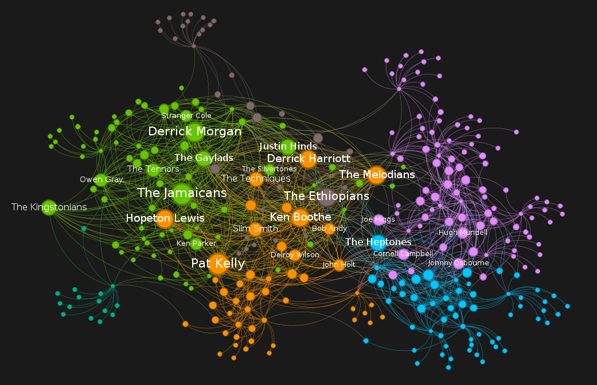

- Documentación API Spotify: Read The Docs
- Libreria Python Spotipy: Spotipy Read The Docs
El primer paso es acceder a la página oficial de la API de spotify (ver enlace arriba), crear una cuenta o hacer login. Luego, debes ir al apartado "Dashboard" y crear "crear una nueva aplicación". Introduce un título y una descripción. Luego copia el ID de cliente, y también el token secreto (recuerda que nunca debes hacer público este token). Con estos datos, ya puedes abrir un nuevo proyecto de PyCharm, y crear un documento llamado "main.py".
import spotipy from spotipy.oauth2 import SpotifyClientCredentials SPOTIPY_CLIENT_ID="credencial-cliente" SPOTIPY_CLIENT_SECRET="clave-secreta-cliente" auth_manager = SpotifyClientCredentials(SPOTIPY_CLIENT_ID, SPOTIPY_CLIENT_SECRET) sp = spotipy.Spotify(auth_manager=auth_manager)
# Importem les llibreries de la llibreria SPOTIPY import spotipy from spotipy.oauth2 import SpotifyClientCredentials # Altres llibreries necessàries import json # Per guardar respostes en .json import time # Per afegir pauses import pandas as pd # per a l'exportació del dataset # Crear les credencials a la consola de desenvolupadors de Spotify SPOTIPY_CLIENT_ID = '' SPOTIPY_CLIENT_SECRET = '' # Generem la autenticació auth_manager = SpotifyClientCredentials(SPOTIPY_CLIENT_ID,SPOTIPY_CLIENT_SECRET) sp = spotipy.Spotify(auth_manager=auth_manager) # Treurem la informació d'aquesta playlist playlist = "3oopyXIZGLFtHjFYN9KbuI" # https://spotipy.readthedocs.io/en/2.22.1/#spotipy.client.Spotify.playlist_items query = sp.playlist_items(playlist, fields=None, limit=100, offset=0, market=None) relacions = [] # Obrim la resposta de la API for i in query["items"]: artists = i["track"]["artists"] for artist in artists: # Agafem el nom de l'artista i la seva ID source_artist_name = artist["name"] source_artist_id = artist["id"] treball = (query["items"].index(i)+1, source_artist_name) print(treball) # Per si falla la API, afegim un try/except try: # Per cada artista a la playlist, demanem a la API una llista d'altres artistes relacionats related_artists = sp.artist_related_artists(source_artist_id) relacionats = related_artists["artists"] for l in relacionats: related_artist_name = l["name"] # Generem una tupla, i la guardem a la llista (linea 26) tupla = (source_artist_name, related_artist_name) relacions.append(tupla) time.sleep(3) except TypeError: print(f"ERROR! {treball}") pass # Exportem la llista de tuplas a una dataframe i desprès a .csv df = pd.DataFrame.from_records(relacions, columns=['source', 'target']) df.to_csv("dataset_v2.csv", index=False)
Playlist de partida: https://open.spotify.com/playlist/3oopyXIZGLFtHjFYN9KbuI
